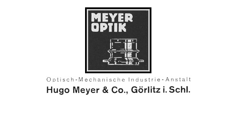
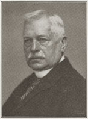
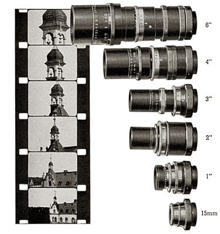

Pre-War Bolex cameras were often equipped with Hugo Meyer lenses, a German manufacturer of photographic lenses founded in the late 1800's. Meyer cine lenses were designed by Dr. Paul Rudolph, who is credited for introducing the first Anastigmatic lens in 1890 -- the Protars -- while under the employment of Carl Zeiss. This was followed in 1897 by the Planars, and in 1902, the Tessar.

He left Zeiss and, following World-War I, began employment for the production of lenses with Hugo Meyer & Company of Gorlitz, Germany. In 1918, Dr. Rudolph completed the calculation of the Plasmat f/4, a convertible lens with full color correction.
With the increasing poularity of motion pictures, he directed his attention to the development of a Plasmat lens of high speed, so that Plasmat results could be brought to the screen. In 1924, he introduced the Kino Plasmat f/2 -- and in 1926, finished the calculation of the Kino Plasmat f/1.5, which at the time was the fastest lens made.

The range of Hugo Meyer cine lenses was expanded to include the Trioplan and Tele Megor series. Listed below are a selection of Meyer lenses that I know to have been produced throughout the 1930s, and which are sometimes found on Bolex cameras manufactured before WWII.
D Mount Lenses for H-8 Cameras
Kino Plasmat 12.5mm f/1.5
Trioplan 25mm f/2.5
Trioplan 36mm f/2.8
C Mount Lenses for H-16 Cameras
Kino-Plasmat 15mm f/1.5
Trioplan 15mm f/2.8 fixed focus lens
Trioplan 15mm f/2.8 with focus mount
Kino-Plasmat 2" f/1.5
Trioplan 2" f/2.8
Trioplan 3" f/2.8
Trioplan 4" f/2.8
Trioplan 3" f/4.5
Trioplan 4" f/4.5
Tele-Megor 3" f/4
Tele-Megor 4" f/4
Tele-Megor 6" f/4
Tele-Megor 7" f/5.5
Tele-Megor 9" f/4